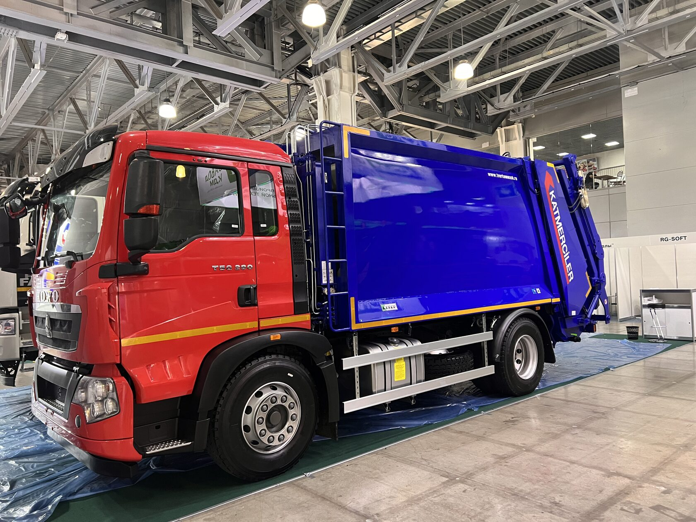
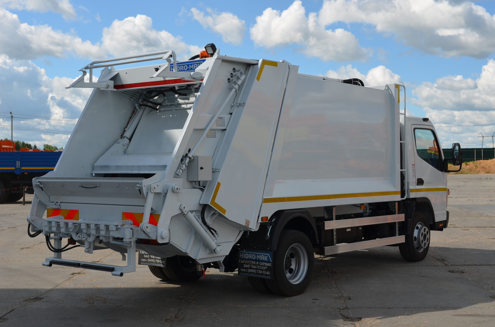
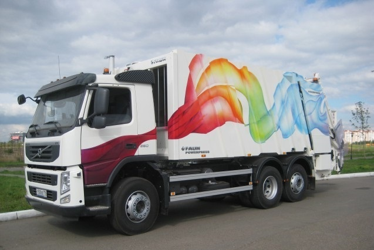
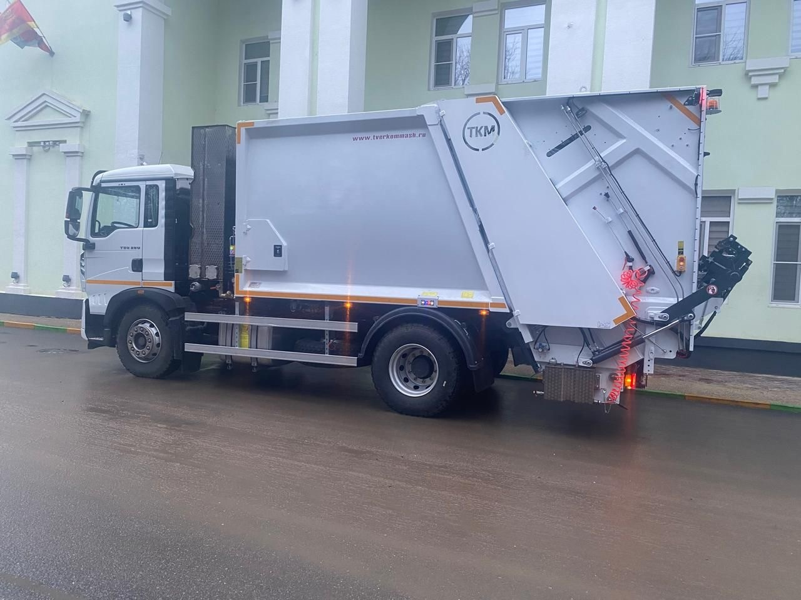
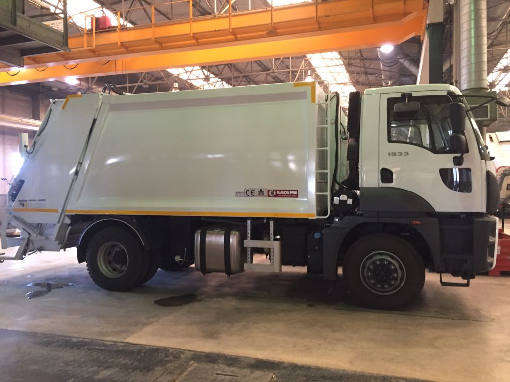
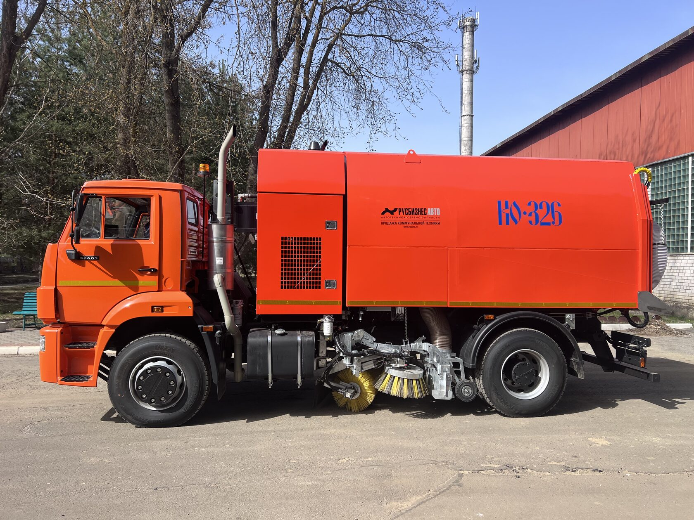
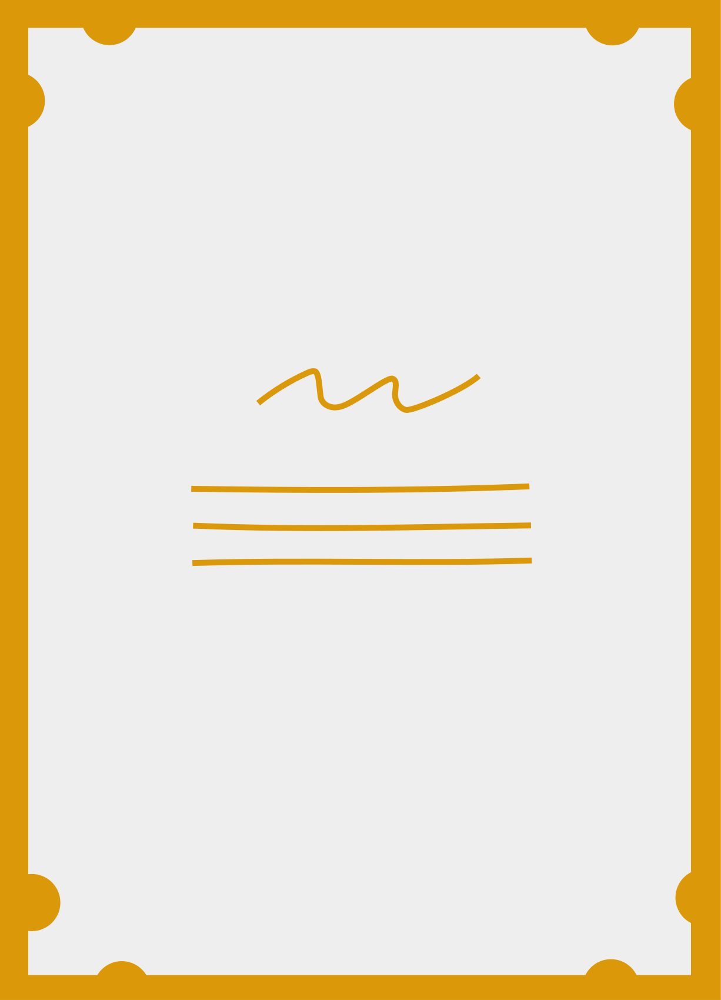

Запчасти для мусоровозов KATMERCILER (Турция)
Установки KATMERCILER монтировались на мусоровозы производства Тверькоммаш и АВТОКРАФТ. Кузовные элементы, гидравлика, электрика.
ПодробнееВ нашем каталоге представлены основные запчасти, которые мы поставляем для коммунальной техники различных производителей: мусоровозов и вакуумных подметально-уборочных машин. Для точного заказа под ваш автомобиль заполните форму заявки или позвоните.

Установки KATMERCILER монтировались на мусоровозы производства Тверькоммаш и АВТОКРАФТ. Кузовные элементы, гидравлика, электрика.
Подробнее
Установки HIDRO-MAK монтировались на мусоровозы производства Автобау. Кузовные элементы, гидравлика, электрика.
Подробнее
Оригинальные запчасти и качественные аналоги для мусоровозов FAUN.
Подробнее
Установки CINAR монтировались на мусоровозы производства РИАТ, Тверькоммаш и ATLAS.
Подробнее
Установки KADEME монтировались на мусоровозы производства Экомтех, ЛБР и ЕМГ.
Подробнее
Запчасти для техники ERDEMLI, CEKSAN, KADEME и КО-326 производства Мценск.
ПодробнееМы предлагаем услуги выездного сервиса и продажу запчастей для мусоровозов и вакуумных подметально-уборочных машин. Наша миссия — обеспечить качественную поддержку владельцам спецтехники, предлагая широкий ассортимент запчастей и профессиональный ремонт. Залогом успеха является многолетний опыт в производстве, монтаже и сервисном обслуживании коммунальной техники. ИП Блинов С.Е. — авторизованный партнер по сервисному обслуживанию и продаже запчастей ведущих производителей спецтехники.
Оформите заявку, указав ваши контактные данные. Мы свяжемся с вами в кратчайшие сроки для обсуждения деталей заказа.
Предлагаем выездной сервис, поставки и изготовление запчастей для мусоровозов различных производителей.
Позвоните мне!
Мы предлагаем полный спектр услуг по ремонту и дооборудованию мусоровозов.
Первичная проверка состояния всех систем мусоровоза.
Диагностика, ремонт, замена систем управления, реле, датчиков, пультов и других элементов.
Изготовление, замена и ремонт заднего борта, выталкивающей и прессующей плит, ножа, кантователя и других элементов.
Установка, замена и ремонт блоков управления оборотами двигателя, освещения и камер обзора.
Диагностика, ремонт и замена КОМ, насосов, гидрораспределителей и гидроцилиндров.
Плановое выездное ТО для поддержания исправности всех систем мусоровоза.
ИП Блинов С.Е. является авторизованным партнером по сервису и продаже запчастей ведущих производителей спецтехники.
Мы обладаем необходимыми сертификатами и лицензиями, подтверждающими качество наших услуг и соответствие стандартам.

Мы всегда на связи, чтобы помочь вам.